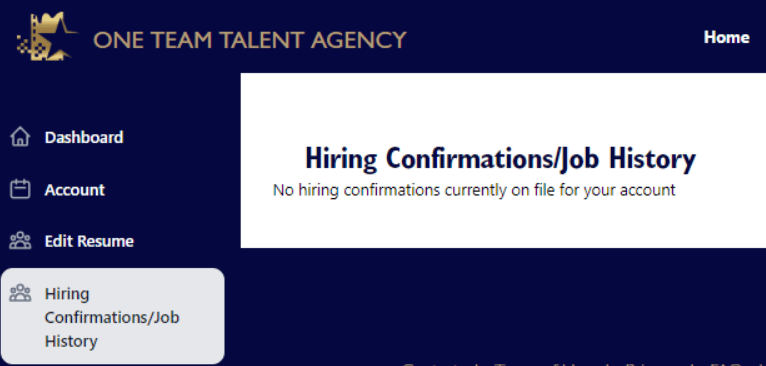

MEMBER MENU
The members' menu starts you on the Dashboard when logging in to OTTA.
If you have reviewed the Member Dashboard and Account page documents, you already know what those links do.
The Edit Resume link will take you to the Resume of Qualifications.
You may have already completed your resume. You can do it here if you need to update or make any changes.
In the resume sections with a button to add information, you simply click the button, add the information, and click the Save button.
In areas where you can change information but no Add button, scroll to the top of the page and click the Save button. A successful save will display this popup.
Click the OK button, and you will be back on the Resume of Qualifications.
The next link on the menu is Hiring Confirmations/Job History. Clicking on this link will take you to a page that displays all of the OTTA-related jobs you have been hired for. Any jobs displayed on this page are automatically added to your Resume of Qualifications.

Next on the menu are OTTA Calendar, Forms, Essentials. This page has current and future calendars that you can download by clicking on the button. Each one will download a PDF file containing all months for the year downloaded. You can print these and mark them up however you see fit.
Those are the primary menu pages for OTTA accounting team members. Beyond those are helpful and informational areas, shown below. Many of these will be populated as we ramp up our production environment.